呼び出し漏れリンターを
作ろうとした結果
Dennis Metzger
Go Night Talks - After Conference
Dennis Metzger
Backend Engineer @ Finatext
ソースコード
↓
抽象構文木 (AST)
↓
静的単一代入(SSA)形式
↓
コールグラフ
ソースコード
- func Calc(a, b int) int {
- if a > b {
- a -= b
- }
- return a
- }
AST
*ast.FuncDecl
Name: *ast.Ident "Calc"
Body: *ast.BlockStmt
0: *ast.IfStmt
Cond: *ast.BinaryExpr
X: *ast.Ident "a"
Op: >
Y: *ast.Ident "b"
Body: *ast.BlockStmt
0: *ast.AssignStmt
Lhs: []ast.Expr
0: *ast.Ident "a"
Tok: -=
Rhs: []ast.Expr
0: *ast.Ident "b"
Else: nil
1: *ast.ReturnStmt
Results: []ast.Expr
0: *ast.Ident "a"
SSA
- func Calc(a, b int) int {
- :0 {
- t0 := a > b
- if t0 goto 1 else 2
- }
- :1 {
- t1 := a - b
- jump 2
- }
- :2 {
- t2 := phi [0: a, 1: t1]
- return t2
- }
- }
抽象構文木 (AST) → 静的単一代入(SSA)形式 → コールグラフ



- fact := typesFact{pass.TypesInfo}
- pass.ExportPackageFact(&fact)
- prog := ssa.NewProgram(pass.Fset, ssa.InstantiateGenerics)
- seen := make(map[*types.Package]struct{})
- var addImports func(pp []*types.Package)
- addImports = func(pp []*types.Package) {
- for _, p := range pp {
- if _, ok := seen[p]; ok {
- continue
- }
- seen[p] = struct{}{}
- tfact := &typesFact{}
- if ok := pass.ImportPackageFact(p, tfact); !ok {
- pkg := prog.CreatePackage(p, nil, nil, true)
- pkg.Build()
- continue
- }
- files := slices.Collect(maps.Keys(tfact.typesInfo.FileVersions))
- pkg := prog.CreatePackage(p, files, tfact.typesInfo, true)
- addImports(p.Imports())
- pkg.Build()
- }
- }
- addImports(pass.Pkg.Imports())
- prog.CreatePackage(pass.Pkg, pass.Files, pass.TypesInfo, false)
- prog.Build()


func Create() {
product.Tx(func() {
autz.CanAccess()
})
}
func Update() {
product.Tx(func() {
// なし
})
}
package product
func Tx(f func()) {
f()
}
関数が引数のケース：想定

関数が引数のケース：実際
想定通りだったとしても…

想定通りだったとしても…
想定通りだったとしても…
想定通りだったとしても…

想定通りだったとしても、検出漏れが発生する
全プログラムポインタ解析
ならできる？
精密なポインター解析は決定不能
フローに依存しない潜在的なエイリアスの
精密な解析もNP困難
結論、
リンターだと厳しいかも

厳しいけれども、次の一歩へ
- 今回は、AST、SSA、コールグラフの知識という貴重な武器を手に入れた
- これからは...
- パターン検出にスコープを限定する
- 他のリンター開発へ転用する
この課題を乗り越えるアイデアを、
ぜひ共有してください！